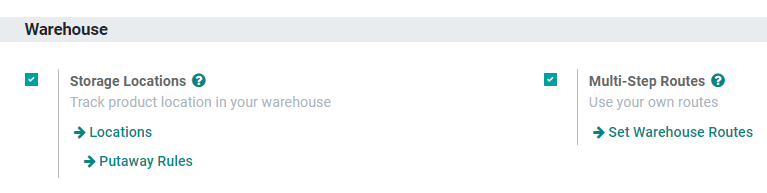
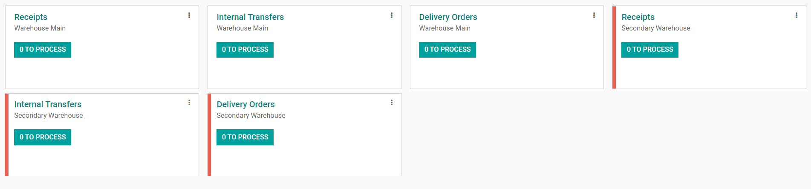
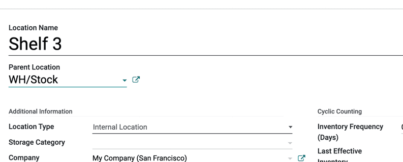

Gestionar almacenes y ubicaciones¶
Terminología¶
Almacén¶
En Odoo, un almacén es el edificio o lugar físico en el que la empresa almacena sus artículos. Puede configurar varios almacenes en Odoo y crear movimientos entre almacenes.
Ubicación¶
Una ubicación es un espacio específico dentro del almacén. Puede ser una sububicación del almacén (un estante, un piso, un pasillo, entre otras). Por lo tanto, una ubicación es parte de un solo almacén y no es posible vincular una ubicación con varios almacenes. Puede configurar tantas ubicaciones como necesite en un almacén.
Hay tres tipos de ubicaciones:
Las ubicaciones físicas son ubicaciones internas que forman parte de los almacenes de la empresa. Pueden ser el área de carga y descarga del almacén, un estante, un departamento, etc.
Las ubicaciones de contacto son espacios dentro del almacén de un proveedor o cliente. Funcionan de la misma forma que las ubicaciones físicas, la única diferencia es que no son propiedad de la empresa del usuario.
Las ubicaciones virtuales son lugares que no existen, pero en los cuales se pueden colocar productos cuando aún no están físicamente en un inventario, o que ya no lo están. Son útiles para registrar productos perdidos (pérdida de inventario) o para contabilizar productos que van en camino a su almacén (aprovisionamientos).
En Odoo las ubicaciones se estructuran de forma jerárquica. Es posible proporcionarles una estructura de árbol en una relación dependiente principal y secundaria, lo que proporciona niveles más detallados de análisis de las operaciones de existencias y la organización de los almacenes.
Configuración¶
Para activar las ubicaciones, vaya a , habilite la función ubicaciones de almacenamiento y haga clic en guardar.
Importante
Si desea administrar varias rutas dentro de los almacenes, habilite rutas multietapa y consulta la siguiente documentación Rutas y reglas push y pull.
Crear un nuevo almacén¶
Para crear un almacén, vaya a y haga clic en crear.
Agregue un nombre de almacén y un nombre corto. El nombre corto debe tener máximo cinco caracteres.

Importante
El nombre corto aparece en sus órdenes de traslado y otros documentos de almacén, le recomendamos que utilice uno que sea fácil de entender, como «WH/[primeras letras de la ubicación]».
Regrese al tablero de Inventario. Ahí se generaron nuevas operaciones de forma automática relacionadas con el almacén que acaba de crear.
Nota
El ajuste ubicaciones se activará de forma automática si agrega un segundo almacén.
Crear una nueva ubicación¶
Para crear una ubicación, vaya a y haga clic en crear.
Agregue el nombre de la ubicación y una ubicación principal, luego haga clic en guardar.
